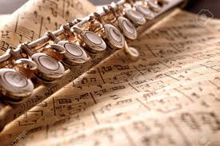

El estudio de la música es un viaje fascinante que comienza con la comprensión de los fundamentos básicos, como el aprendizaje de cómo leer las notas musicales, el solfeo y la interpretación de partituras. Estas habilidades son esenciales para cualquier músico, ya que proporcionan el lenguaje y las herramientas necesarias para comunicar y expresar la música de manera efectiva.
- Leer las notas musicales: Aprender a leer las notas musicales es como aprender un nuevo idioma. Las notas están representadas por símbolos en un pentagrama y cada nota corresponde a una altura específica en el espectro musical. Comenzando con las notas en el pentagrama (la clave de sol y la clave de fa), los músicos aprenden a identificar y asociar cada nota con su nombre y su posición en el pentagrama. Con práctica y repetición, esta habilidad se vuelve más fluida y natural, permitiendo a los músicos leer e interpretar la música con facilidad.
- Solfeo: El solfeo es una herramienta invaluable para desarrollar el oído musical y la comprensión auditiva. Implica cantar las notas musicales usando sílabas específicas (do, re, mi, fa, sol, la, si) en lugar de sus nombres. A través del solfeo, los músicos pueden entrenar su oído para reconocer intervalos, escalas, acordes y melodías, lo que mejora su capacidad para interpretar la música con precisión y expresión.
- Interpretación de partituras: Las partituras son representaciones gráficas de la música escrita, que incluyen notas, ritmos, indicaciones de tempo, dinámicas y otros elementos de interpretación. Aprender a interpretar una partitura requiere comprender todos estos elementos y ser capaz de traducirlos en una interpretación musical coherente. Los músicos estudian la partitura para comprender la estructura de la pieza, las frases musicales, los cambios de tempo y las indicaciones de expresión, y luego aplican esta comprensión en su interpretación para transmitir la intención y el mensaje emocional de la música.